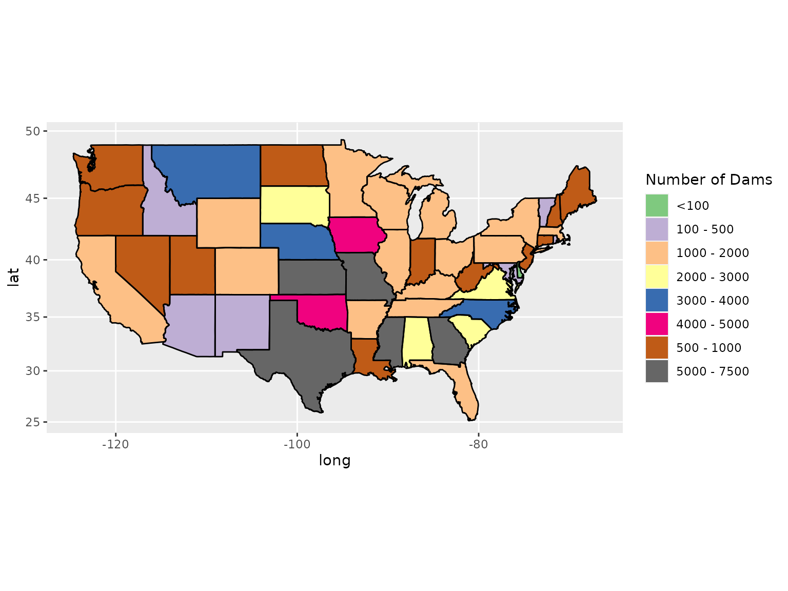

Dams Package Demo
Gopi Goteti
Joseph Stachelek
2016-11-10
This document provides examples on how to obtain data using the dams package and how to create summary graphics of the extracted data.
Data Attributes
If you have not already done so, load the package along with ggplot and maps (for graphics).
require(dams)
require(ggplot2)
require(maps)
require(mapproj)Load Data
Load the entire dataset. This might take a few moments.
dams_all <- nid_cleaned
dim(dams_all)## [1] 74096 61head(dams_all, 3)## Dam_Name Other_Dam_Name NID_ID Num_Separate_Struct
## 1 NIX MILL POND DAM NIX MILL DAM AL00106 0
## 2 LIGHTSEY S MILL POND DAM MILL POND DAM AL00533 0
## 3 ODUMS MILL DAM ODOMS MILL POND AL00890 0
## Other_Structure_ID Longitude Latitude County River
## 1 -87.8050 34.3483 FRANKLIN EDGAR BRANCH
## 2 -87.1233 32.9100 BIBB LIGHTSEY S BRANCH
## 3 -87.4000 33.9566 WALKER BLACKWATER CREEK
## Owner_Type Private_Dam Dam_Designer Dam_Type Core Foundation
## 1 Not Listed N Rockfill
## 2 Private N Earth
## 3 Private N Gravity
## Primary_Purpose All_Purposes Year_Completed Year_Modified
## 1 Other Other 1800
## 2 Recreation Recreation 1890
## 3 Other Recreation, Other 1850
## Dam_Length Dam_Height Structural_Height Hydraulic_Height NID_Height
## 1 60 NA 25 25 25
## 2 350 NA 13 10 13
## 3 125 NA 12 12 12
## Max_Discharge Max_Storage Normal_Storage NID_Storage Surface_Area
## 1 140 55 55 55 NA
## 2 250 80 80 80 NA
## 3 NA 180 150 180 NA
## Drainage_Area EAP Inspection_Date Inspection_Frequency Spillway_Type
## 1 NA N 0
## 2 NA N 0
## 3 NA N 0
## Spillway_Width Outlet_Gates Volume Num_Locks Length_Locks Width_Locks
## 1 0 NA NA 0 NA
## 2 0 NA NA 0 NA
## 3 0 NA NA 0 NA
## Permitting_Authority Inspection_Authority Enforcement_Authority
## 1 N N N
## 2 N N N
## 3 N N N
## Jurisdictional_Dam State_Reg_Dam State_Reg_Agency Fed_Funding Fed_Design
## 1 N N
## 2 N N
## 3 N N
## Fed_Construction Fed_Regulatory Fed_Inspection Fed_Operation Fed_Owner
## 1
## 2
## 3
## Fed_Other Source_Agency State Submit_Date Url_Address
## 1 AL AL 01\\02\\2013 NA
## 2 AL AL 01\\02\\2013 NA
## 3 AL AL 01\\02\\2013 NA
## Congress_Rep Political_Party Congress_District
## 1 Robert B. Aderholt (R) R AL04
## 2 Spencer Bachus (R) R AL06
## 3 Robert B. Aderholt (R) R AL04Summary Graphics
Data for graphics
gfx_data <- dams_all[, c("Year_Completed", "State")]
head(gfx_data)## Year_Completed State
## 1 1800 AL
## 2 1890 AL
## 3 1850 AL
## 4 1880 AL
## 5 1881 AR
## 6 1877 CACounts of number of dams built per decade or other time period of interest
gfx_data$Year <- cut(gfx_data$Year_Completed,
breaks = c(0, 1850, seq(1900, 2000, 10), 2014),
labels = c("<1850", "1850-1900", "1910", "1920", "1930",
"1940", "1950", "1960", "1970", "1980", "1990",
"2000", "2014"))
table(gfx_data$Year)##
## <1850 1850-1900 1910 1920 1930 1940 1950
## 1264 2588 1464 2015 2329 4130 4825
## 1960 1970 1980 1990 2000 2014
## 12816 18770 12027 4853 4221 2794year_counts <- as.data.frame(table(gfx_data$Year), stringsAsFactors = FALSE)
colnames(year_counts) <- c("Year", "Count")Histogram of number of dams by time period
gfx_bar <- ggplot(year_counts, aes(x = Year, y = Count))
gfx_bar <- gfx_bar + geom_bar(position = "dodge", stat = "identity")
gfx_bar <- gfx_bar + ylab("Number of Dams") + xlab("Year of Completion")
gfx_bar <- gfx_bar + ggtitle("Number of Dams in the NID Database")
Counts of dams per state in the US mainland
gfx_data <- subset(gfx_data, !(State %in% c("AK", "HI", "PR", "GU")))
sort(table(gfx_data$State))##
## NV DE RI MD AZ VT IL WV ID LA NC NM NJ NH ME
## 43 51 174 305 319 358 391 413 431 441 444 453 510 590 597
## UT CT FL WA ND OR IN MI MN KY TN WI AR MA OH
## 617 700 781 790 820 839 847 914 1005 1025 1113 1116 1243 1244 1261
## VA PA CA WY CO NY MS AL SC NE SD MT GA IA OK
## 1307 1311 1500 1607 1704 1761 1981 2135 2259 2340 2510 3236 3724 3913 4756
## MO KS TX
## 5002 5692 7253Map of dams per state in the US mainland
state_counts <- as.data.frame(table(gfx_data$State), stringsAsFactors = FALSE)
colnames(state_counts) <- c("state", "Count")
# add long names of states
state_names <- data.frame(state = state.abb,
name = state.name,
stringsAsFactors = FALSE)
gfx_data <- merge(state_counts, state_names, by = "state")
# change state name to lower case to be consistent with ggplot
gfx_data$name <- tolower(gfx_data$name)
# geo reference data on states from ggplot
geo_state <- map_data("state")
# merge data with above for graphics
gfx_data <- merge(geo_state, gfx_data, by.x = "region", by.y = "name")
gfx_data <- gfx_data[order(gfx_data$order), ]
# discretize state counts
color_breaks <- c(0, 100, 500, 1000, 2000, 3000, 4000, 5000, 7500)
color_labels <- c("<100", "100 - 500", "500 - 1000", "1000 - 2000",
"2000 - 3000", "3000 - 4000", "4000 - 5000", "5000 - 7500")
gfx_data$dams <- cut(gfx_data$Count,
breaks = color_breaks,
labels = color_labels)
gfx_map <- ggplot(data = gfx_data)
gfx_map <- gfx_map + geom_polygon(aes(x = long, y = lat, group = group,
fill = dams))
gfx_map <- gfx_map + geom_path(data = geo_state, aes(x = long, y = lat,
group = group, fill = NA))
gfx_map <- gfx_map + labs(list(title = "Number of Dams in the NID Database",
x = NULL, y = NULL))
gfx_map <- gfx_map + guides(fill = guide_legend(title = "Number of Dams"))
gfx_map <- gfx_map + scale_fill_brewer(palette = "Accent")
gfx_map <- gfx_map + coord_map()
Other Analyses: Flood Control Dams
A number of interesting analyses could be performed with the dataset. Of interest to water resources managers and hydrologists is the location of flood control dams. It is interesting to see a few states like Texas have a large number of flood control dams.
flood_dams <- subset(dams_all, Primary_Purpose == "Flood Control")
table(flood_dams$State)##
## AK AL AR AZ CA CO CT DE FL GA HI IA ID IL IN
## 4 131 221 91 190 230 20 2 171 369 6 369 12 49 147
## KS KY LA MA MD ME MI MN MO MS MT NC ND NE NH
## 1905 223 40 119 63 113 28 305 897 596 98 79 91 950 43
## NJ NM NV NY OH OK OR PA PR RI SC SD TN TX UT
## 33 208 12 139 112 2340 20 195 5 1 112 89 209 2260 125
## VA VT WA WI WV WY
## 199 15 109 123 178 100